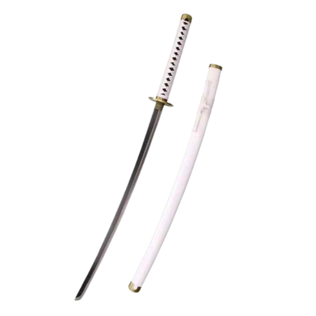
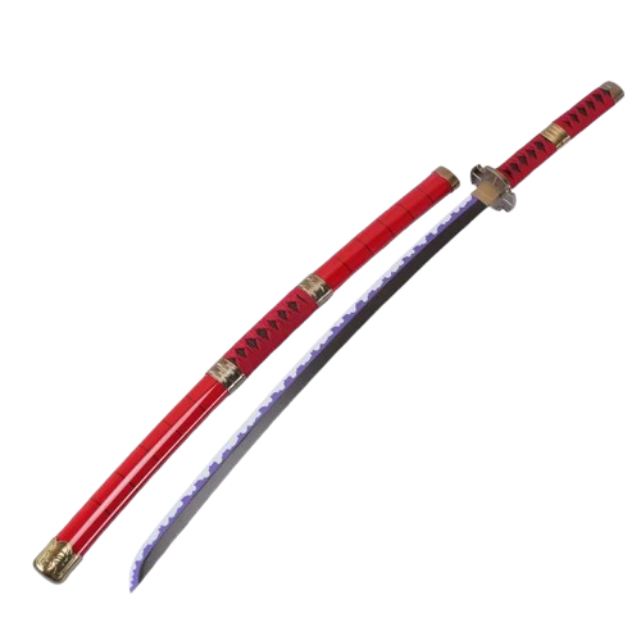
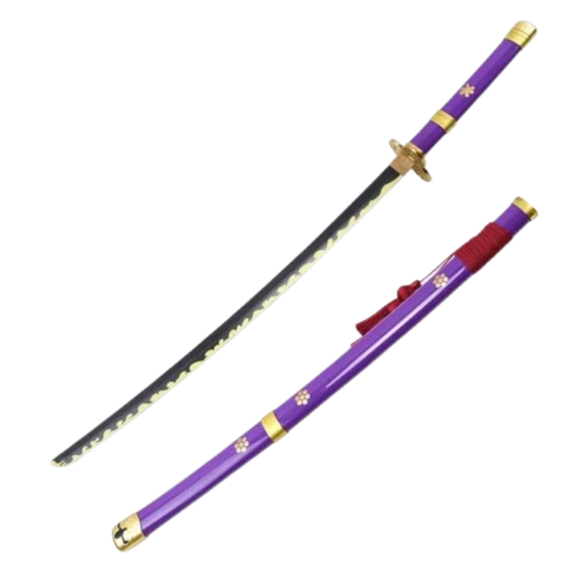
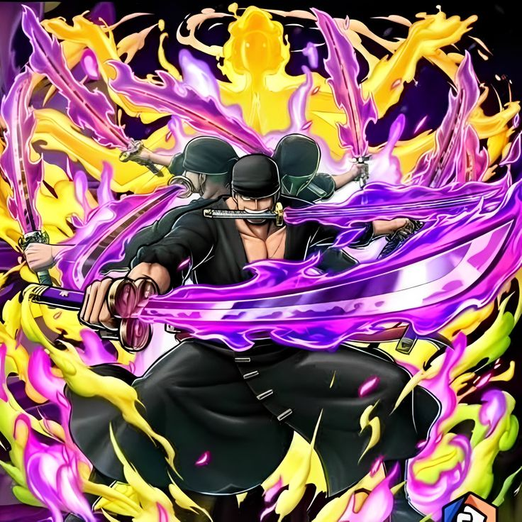

ZORO
ZORO
ZORO
ZORO
Три легендарных клинка и боевые техники, которыми он сокрушает врагов

21 великий меч
Последний дар Куины. Белый клинок с белым свечением. Символ клятвы. Зоро никогда не расстаётся с этим мечом. Он носит его как напоминание о своей цели и как обещание стать сильнейшим. Этот меч — его связь с прошлым и его будущее. Он самый дорогой для Зоро, потому что он единственный, кто помнит его клятву.

Проклятый меч
Фиолетовый клинок с аурой проклятия. Приносит смерть владельцу, но Зоро подчинил его своей волей. Его фиолетовое свечение — символ силы и контроля. Этот меч стал частью Зоро, его тёмной стороной, которую он обуздал. Он доказывает, что даже проклятие можно обратить в силу, если у тебя есть воля.

Легендарный клинок Одена
Зелёное свечение, высасывает Хаки. Способен разрубить небо. Получен в Вано. Это самый мощный меч Зоро, который требует полного контроля над Хаки. Он был создан для легенд, и Зоро стал достоин его. Энма — это ключ к его будущей силе, к битве с Михоуком.

Асура — демоническая форма Зоро, в которой он создаёт 9 рук и 9 голов. Это не дьявольский плод, а проявление его духа и воли. Впервые использовал против Каку в Эниес Лобби, а в Вано усилил до «Короля Ада». Эта форма делает его почти непобедимым, но требует колоссальной концентрации. Она — его козырь в самых сложных битвах.